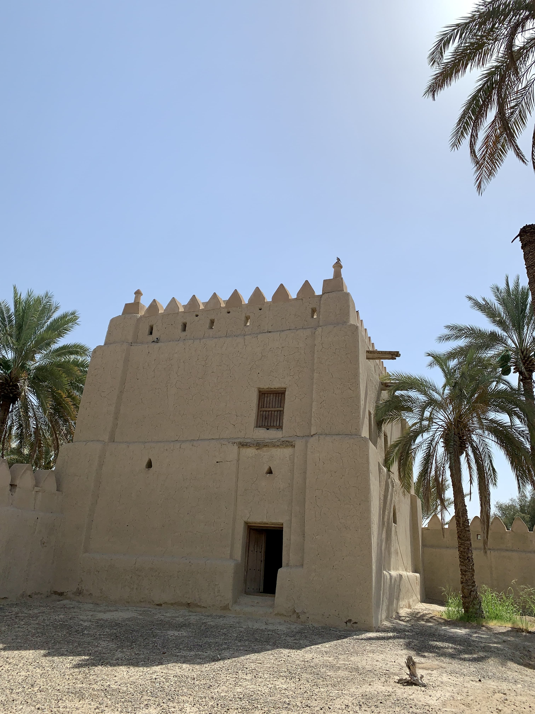

حصن الشيخ سلطان الدرمكي في القطارة، قرب واحة القطارة. تُحيط به مزارع من شماله وغربه. بنى الحصنَ أحد شيوخ الدرامكة قبل عام 1840، ورُمِّم سنة 1990.
وهو حصن مستطيل واسع، واجهته نحو الغرب، له بابان: الباب الرئيس باتجاه مزارع النخيل غربًا، والثاني باب صغير باتجاه الشرق، مطلٌّ على مواقف السيارات. إن تدخل الحصن ترى عن يمينك وشمالك بابين لغرفتَين مقفلَين. ثم تتقدم إلى الفناء، فترى النخل الباسقات وسطه، بينهن شجيرة رمان دانية الثمار.
إذا يممت يمينًا، ترى غرف القصر، ومعظمها خالية. وُضعت أعمدة حديد لإسناد السقف وحمايته.

ثم إذا دخلت إحدى الغرف فإنك ستجد درجًا يمينَ الباب يؤدي إلى سطح الحصن.

ثم إذا خرجت من الغرف، سترى أمامك قلعة مربعة في الزاوية الشمالية الشرقية للحصن، لها باب صغير.
إذا خرجت من المربعة ستجد في الزاوية المقابلة جدارًا قصيرًا له مدخل، ولعله كان مخزنًا، ولعل جداره كان أطول سابقًا.


الحصن واقعٌ بين بيوت ومزارع، والطريق الموصل له ضيق وبين البيوت وقد لا يُرى جيدًا.